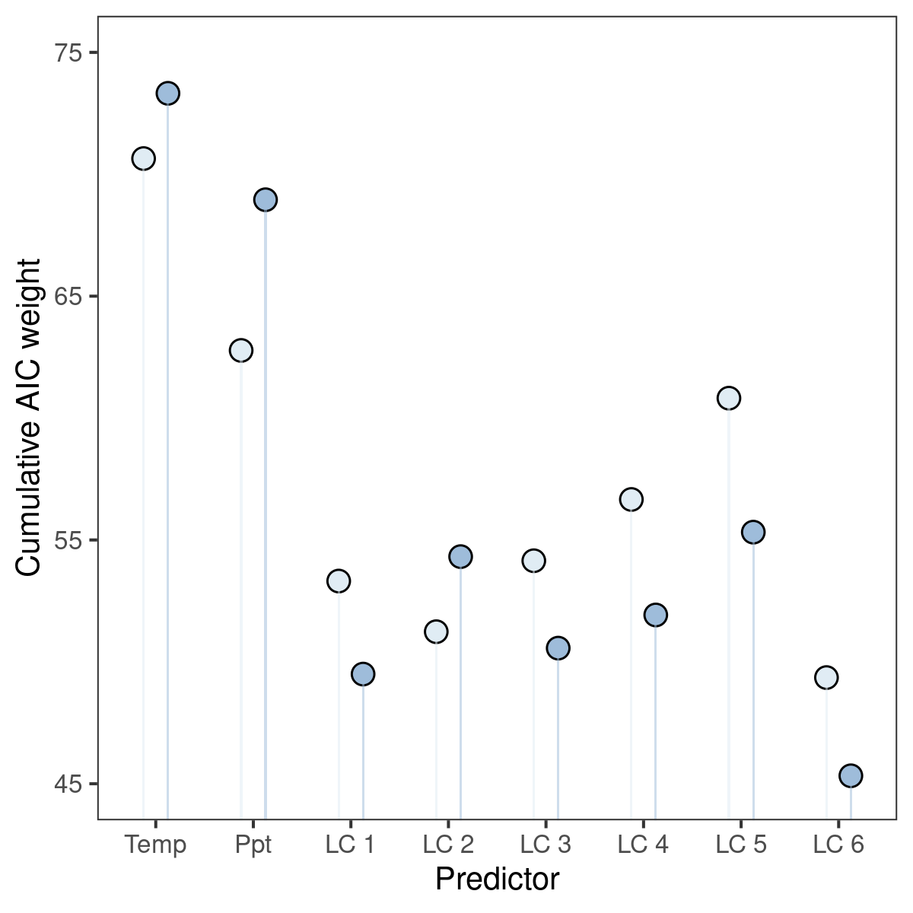

Section 7 Results: Occupancy predictors
7.1 Prepare libraries
# to load data
library(readxl)
# to handle data
library(dplyr)
library(readr)
library(forcats)
library(tidyr)
library(purrr)
library(stringr)
# to wrangle models
source("code/fun_model_estimate_collection.r")
source("code/fun_make_resp_data.r")
# nice tables
library(knitr)
library(kableExtra)
# plotting
library(ggplot2)
library(patchwork)
source("code/fun_plot_interaction.r")7.2 Read species trait data and the final list of species
7.3 Show AIC weights
7.3.1 Read in weight data
# which files to read
file_names <- c("data/results/occu-2.5km/occuCovs/modelImp/lc-clim-imp.xlsx",
"data/results/occu-10km/occuCovs/modelImp/lc-clim-imp.xlsx")
# read in sheets by species
model_imp <- map(file_names, function(f) {
md_list <- map(list_of_species, function(sn) {
# some sheets are not found
tryCatch({
readxl::read_excel(f, sheet = sn) %>%
`colnames<-`(c("predictor", "AIC_weight")) %>%
filter(str_detect(predictor, "psi")) %>%
mutate(predictor = stringr::str_extract(predictor,
pattern = stringr::regex("\\((.*?)\\)")),
predictor = stringr::str_replace_all(predictor, "[//(//)]", ""),
predictor = stringr::str_remove(predictor, "\\.y"))
},
error = function(e) {
message(as.character(e))
}
)
})
names(md_list) <- list_of_species
return(md_list)
})Sheets for one laughingthrush Montecincla fairbankii and one barbet Psilopogon viridis are not found at both scales.
7.3.2 Show cumulative weights as plot
# assign scale
names(model_imp) <- c("2.5km", "10km")
model_imp <- imap(model_imp, function(.x, .y) {
.x <- bind_rows(.x)
.x$scale <- .y
return(.x)
})
# bind rows
model_imp <- map(model_imp, bind_rows) %>%
bind_rows()
# convert to numeric
model_imp$AIC_weight <- as.numeric(model_imp$AIC_weight)
model_imp$scale <- as.factor(model_imp$scale)
levels(model_imp$scale) <- c("2.5km", "10km")
# summ by scale and predictor
model_imp <- group_by(model_imp, predictor, scale) %>%
summarise(AIC_weight_cumulative = sum(AIC_weight))7.3.3 Make plot
ggplot(model_imp)+
geom_point(aes(predictor, AIC_weight_cumulative,
col = scale),
size = 3,
position = position_dodge(width = 0.5))+
geom_col(aes(predictor, AIC_weight_cumulative,
fill = scale),
colour = NA,
width = 0.1,
alpha = 0.5,
position = position_dodge(width = 0.5))+
theme_minimal()+
theme(legend.position = "top")
ggsave("figs/fig_aic_weight.png", dpi = 300)

Cumulative AIC weights.
7.4 Read model estimates
file_read <- c("data/results/occu-2.5km/occuCovs/modelEst/lc-clim-modelEst.xlsx",
"data/results/occu-10km/occuCovs/modelEst/lc-clim-modelEst.xlsx")
# read data as list column
model_est <- map(file_read, function(fr) {
md_list <- map(list_of_species, function(sn) {
readxl::read_excel(fr, sheet = sn)
})
names(md_list) <- list_of_species
return(md_list)
})
# prepare model data
scales = c("2.5km", "10km")
model_data <- tibble(crossing(scale = scales,
scientific_name = list_of_species)) %>%
arrange(desc(scale))
# rename model data components and separate predictors
names <- c("predictor", "coefficient", "se", "ci_lower",
"ci_higher", "z_value", "p_value")
# get data for plotting:
model_est <- map(model_est, function(l) {
map(l, function(df) {
colnames(df) <- names
df <- separate_interaction_terms(df)
df <- make_response_data(df)
return(df)
})
})
# add names and scales
model_est <- map(model_est, function(l) {
imap(l, function(.x, .y) {
mutate(.x, scientific_name = .y)
})
})
# add names to model estimates
names(model_est) <- scales
model_est <- imap(model_est, function(.x, .y) {
bind_rows(.x) %>%
mutate(scale = .y)
})
# remove modulators
model_est <- bind_rows(model_est) %>%
select(-matches("modulator"))
# join data to species name
model_data <- model_data %>%
left_join(model_est)7.4.1 Export data to file
Export predictor effects.
# get predictor effect data
data_predictor_effect <- distinct(model_data,
scientific_name, scale,
predictor, coefficient)
# write to file
write_csv(data_predictor_effect,
path = "data/results/data_predictor_effect.csv")Export model data.
7.5 Occupancy predictors’ aggregated effect
Plot the number of species affected and the direction of the effect, for each predictor. Split the data along the axes of range size, migratory status, and habitat.
7.5.1 Add trait data and clean
# add trait by joining
data_predictor_effect <- data_predictor_effect %>%
left_join(species_trait, by = "scientific_name")# remove .y from predictors
data_predictor_effect <- data_predictor_effect %>%
mutate_at(.vars = c("predictor"), .funs = function(x){
stringr::str_remove(x, ".y")
})What is the direction of the predictor effect for each subset of the data by the distribution, habitat, and migratory status?
7.5.2 Get predictor effects
# first pivot the data longer
data_predictor_long <- data_predictor_effect %>%
pivot_longer(cols = c("range_size", "migratory_status",
"habitat", "elev"),
names_to = "trait")
# reorder scale
data_predictor_long <- data_predictor_long %>%
mutate(scale = fct_relevel(scale, "2.5km", "10km"))
# is the coeff positive? how many positive per scale per predictor per axis of split?
data_predictor_long <- mutate(data_predictor_long,
direction = coefficient > 0) %>%
count(scale, predictor,
trait, value, direction) %>%
mutate(mag = n * (if_else(direction, 1, -1)))
# wrangle data to get nice bars
data_predictor_long <- data_predictor_long %>%
select(-n) %>%
drop_na(direction, value) %>%
mutate(direction = ifelse(direction, "positive", "negative")) %>%
pivot_wider(values_from = "mag", names_from = "direction") %>%
mutate_at(vars(positive, negative),
~if_else(is.na(.), 0, .))
data_predictor_long <- data_predictor_long %>%
pivot_longer(cols = c("negative", "positive"),
names_to = "effect",
values_to = "magnitude")
# write
write_csv(data_predictor_long,
path = "data/results/data_predictor_long.csv")
# nest the data by trait
data_predictor_long <- data_predictor_long %>%
nest(data = -trait)7.5.3 Manual edits to levels
7.5.4 Make figures for predictor effects
# visualise the data by mapping over the nested list
data_predictor_long <- mutate(data_predictor_long,
figs = map2(data, trait, function(df, tr){
ggplot(df)+
geom_hline(yintercept = 0,
lty = 2, lwd = 0.2,
col = "grey")+
geom_col(aes(x = factor(predictor),
y = magnitude,
fill = effect))+
scale_x_discrete(guide = guide_axis(n.dodge = 2)#,
# label = 1:length(unique(df$predictor))
)+
scico::scale_fill_scico_d(palette = "berlin",
direction = -1,
begin = 0.1,
end = 0.9)+
theme_grey(base_family = "TT Arial")+
theme(legend.position = "none")+
facet_grid(value ~ scale,
labeller = label_both)+
labs(x = "predictor", y = "species",
title = glue::glue('trait: {tr}'))
}))
fig_predictor_effect <- patchwork::wrap_plots(data_predictor_long$figs,
nrow = 2)
# save plot
ggsave(fig_predictor_effect, filename = "figs/fig_predictor_effect.png",
dpi = 300,
width = 12)
7.5.5 Tabulate predictor effect
# read again and nest
data_predictor_long <- readr::read_csv("data/results/data_predictor_long.csv")
# nest the data by trait
data_predictor_long <- tidyr::nest(data_predictor_long,
data = -trait)
# first pivot the data columns
purrr::pwalk(data_predictor_long, function(trait, data) {
predictors <- unique(data$predictor)
headers <- c(1, 1, rep(2, length(predictors)))
names(headers) <- c(rep(" ", 2), predictors)
data %>%
tidyr::drop_na() %>%
tidyr::pivot_wider(names_from = c("predictor", "effect"),
values_from = "magnitude") %>%
`colnames<-`(c("spatial scale", glue::glue("{trait} class"),
rep(c("+ve", "-ve"), length(predictors)))) %>%
knitr::kable(caption = glue::glue("Predictor effects for {trait}")) %>%
kableExtra::kable_styling("striped", full_width = F,
font_size = 8) %>%
kableExtra::add_header_above(headers) %>%
print()
cat("\n")
})| spatial scale | elev class | +ve | -ve | +ve | -ve | +ve | -ve | +ve | -ve | +ve | -ve | +ve | -ve | +ve | -ve | +ve | -ve |
|---|---|---|---|---|---|---|---|---|---|---|---|---|---|---|---|---|---|
| 2.5km | HIGH | -9 | 0 | -1 | 4 | -5 | 1 | -2 | 0 | -1 | 1 | -2 | 1 | -1 | 0 | ||
| 2.5km | LOW | 0 | 29 | -14 | 11 | 0 | 3 | -7 | 10 | -3 | 0 | -11 | 1 | -13 | 3 | -3 | 1 |
| 2.5km | MID | -20 | 4 | -6 | 18 | -8 | 5 | -6 | 10 | -10 | 2 | -8 | 1 | -10 | 5 | -2 | 4 |
| 10km | HIGH | -9 | 0 | -3 | 1 | -5 | 1 | -1 | 1 | -1 | 1 | -3 | 1 | 0 | 2 | ||
| 10km | LOW | 0 | 23 | -15 | 5 | -4 | 5 | -8 | 7 | -8 | 0 | -16 | 0 | -12 | 3 | -7 | 3 |
| 10km | MID | -21 | 4 | -6 | 12 | -6 | 8 | -5 | 13 | -15 | 2 | -8 | 3 | -13 | 6 | -4 | 6 |
| spatial scale | habitat class | +ve | -ve | +ve | -ve | +ve | -ve | +ve | -ve | +ve | -ve | +ve | -ve | +ve | -ve | +ve | -ve |
|---|---|---|---|---|---|---|---|---|---|---|---|---|---|---|---|---|---|
| 2.5km | FOR | -16 | 13 | -5 | 26 | -9 | 2 | -3 | 15 | -4 | 2 | -10 | 0 | -13 | 3 | -3 | 2 |
| 2.5km | OC | -13 | 20 | -16 | 7 | -4 | 7 | -12 | 5 | -10 | 1 | -9 | 2 | -12 | 6 | -3 | 3 |
| 10km | FOR | -16 | 9 | -6 | 12 | -11 | 2 | -4 | 13 | -8 | 1 | -12 | 0 | -15 | 5 | -1 | 11 |
| 10km | OC | -14 | 18 | -18 | 6 | -4 | 12 | -9 | 7 | -16 | 2 | -13 | 4 | -13 | 5 | -10 | 0 |
| spatial scale | migratory_status class | +ve | -ve | +ve | -ve | +ve | -ve | +ve | -ve | +ve | -ve | +ve | -ve | +ve | -ve | +ve | -ve |
|---|---|---|---|---|---|---|---|---|---|---|---|---|---|---|---|---|---|
| 2.5km | MIG | -5 | 4 | 0 | 5 | -4 | 0 | -1 | 2 | -2 | 0 | -1 | 0 | -2 | 0 | 0 | 1 |
| 2.5km | RES | -24 | 29 | -21 | 28 | -9 | 9 | -14 | 18 | -12 | 3 | -18 | 2 | -23 | 9 | -6 | 4 |
| 10km | MIG | -6 | 4 | -1 | 4 | -3 | 0 | -1 | 0 | -3 | 0 | -1 | 1 | -3 | 0 | 0 | 1 |
| 10km | RES | -24 | 23 | -23 | 14 | -12 | 14 | -12 | 20 | -21 | 3 | -24 | 3 | -25 | 10 | -11 | 10 |
| spatial scale | range_size class | +ve | -ve | +ve | -ve | +ve | -ve | +ve | -ve | +ve | -ve | +ve | -ve | +ve | -ve | +ve | -ve |
|---|---|---|---|---|---|---|---|---|---|---|---|---|---|---|---|---|---|
| 2.5km | LAR | -13 | 18 | -8 | 14 | -4 | 4 | -6 | 6 | -4 | 2 | -8 | 1 | -7 | 4 | -2 | 1 |
| 2.5km | MOD | -9 | 2 | 0 | 15 | -5 | 1 | 0 | 10 | -3 | 1 | -2 | 0 | -9 | 1 | -1 | 1 |
| 2.5km | VLAR | -7 | 13 | -13 | 4 | -4 | 4 | -9 | 4 | -7 | 0 | -9 | 1 | -9 | 4 | -3 | 3 |
| 10km | LAR | -12 | 14 | -10 | 6 | -4 | 5 | -4 | 8 | -7 | 1 | -8 | 1 | -5 | 5 | -2 | 5 |
| 10km | MOD | -10 | 1 | -1 | 7 | -7 | 1 | -2 | 7 | -5 | 1 | -5 | 0 | -12 | 2 | 0 | 6 |
| 10km | VLAR | -8 | 12 | -13 | 5 | -4 | 8 | -7 | 5 | -12 | 1 | -12 | 3 | -11 | 3 | -9 | 0 |
7.6 Land cover or climate?
Group the predictor data by two broad classes, landcover or climate.
7.6.1 Get the effect of landcover or climate
# remove figs and unnest
data_predictor_long <- data_predictor_long %>%
select(!matches("figs")) %>%
unnest(data)
# group by predictor
data_lc_v_clim <- data_predictor_long %>%
mutate(predictor = if_else(str_detect(predictor, "bio"),
"climate", "landcover")) %>%
group_by(trait, scale, predictor, value, effect) %>%
summarise_at(.vars = c("magnitude"),
.funs = list(sum))7.6.2 Plot a figure
# make list of figures
data_lc_v_clim$figs <- pmap(data_lc_v_clim[,c("trait", "cols")],
function(trait, cols) {
ggplot(cols) +
geom_col(aes(predictor, magnitude,
fill = effect),
width = 0.4) +
scico::scale_fill_scico_d(palette = "berlin",
direction = -1,
begin = 0.1, end = 0.9)+
theme_grey(base_family = "TT Arial") +
theme(legend.position = "none") +
facet_grid(value ~ scale,
labeller = label_both) +
labs(title = glue::glue('trait: {trait}'))
})
fig_lc_v_clim <- patchwork::wrap_plots(data_lc_v_clim$figs,
nrow = 2)
# save plot
ggsave(fig_lc_v_clim, filename = "figs/fig_lc_v_clim.png",
dpi = 300)7.7 Elevation summary THIS NEEDS TO BE REMOVED
Plot elevation summaries faceted by scale and predictors. Read species elevation summaries.
# add elevation data
elev_summary <- read_excel("data/data_species_elevation.xlsx")
# link to species
elev_summary <- elev_summary %>%
left_join(data_predictor_effect)
# arrange in plot order
elev_summary <- elev_summary %>%
group_by(scale, scientific_name) %>%
arrange(median) %>%
mutate(plot_order = seq_len(n()))
# remove NAs and order scale
elev_summary <- select(elev_summary,
-`Body mass`) %>%
drop_na() %>%
mutate(scale = fct_relevel(scale,
"2.5km", "10km"))
# rename median
elev_summary <- rename(elev_summary,
median_elev = median)
# order
elev_summary <- elev_summary %>%
ungroup() %>%
arrange(-median_elev) %>%
group_by(scientific_name)# plot elevation pointranges
ggplot(elev_summary)+
geom_errorbar(aes(plot_order,
ymin = q1, ymax = q3),
size = 0.3, width = 0.4)+
geom_point(aes(plot_order, median_elev),
shape = 21, col = "grey20")+
facet_grid(scale ~ predictor,
scales = "fixed",
labeller = label_both,
as.table = FALSE)+
theme_test()+
theme(legend.position = "none",
legend.key = element_rect(colour = "white",
size = 0.3),
# axis.text.y = element_blank(),
axis.ticks.y = element_blank())#+
# coord_flip()+
# labs(x = "Species",
# colour = "synthesis_var")